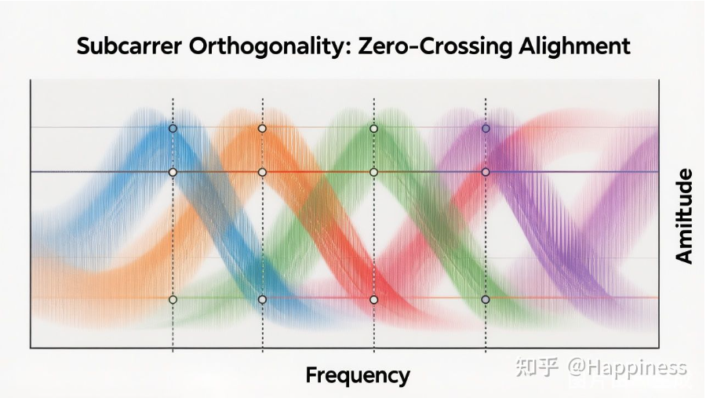
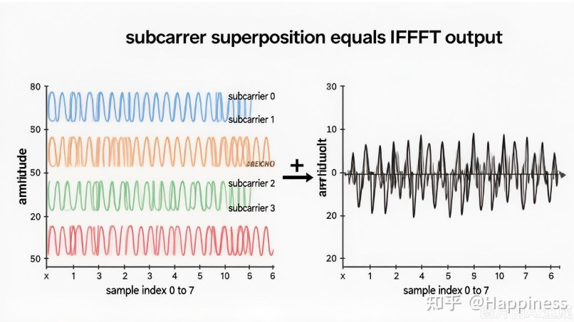

Current focus
第 13 讲：载波频率同步——消除频偏的影响
第 13 讲从 CFO 来源讲到 CPE/ICI 影响、CP 与 Moose 频偏估计、导频跟踪、时域频旋转、频域 CPE 补偿和 5G NR PT-RS 实践。
CFO
CPE
ICI
Moose
PT-RS
这个专栏把 OFDM 的设计动机、关键参数、FFT/IFFT 实现、循环前缀、QAM 映射、子载波映射、PAPR、无线信道建模、符号定时同步、载波频率同步、均衡和工程权衡放在同一条学习线上。前十三篇先从单载波困境、子载波正交性、发射机框架、IFFT 核心原理、CP 保护机制、频域输入向量、IFFT 硬件实现、循环前缀加窗、峰均比问题、PAPR 抑制技术、无线信道模型、接收机同步和载波频偏补偿说起。
第 13 讲从 CFO 来源讲到 CPE/ICI 影响、CP 与 Moose 频偏估计、导频跟踪、时域频旋转、频域 CPE 补偿和 5G NR PT-RS 实践。

从无线多径信道和频率选择性衰落出发，解释单载波时域均衡器为什么会随带宽变宽而迅速变复杂，再引出 OFDM 的子载波划分、正交性、循环前缀和关键参数。

从几何内积推广到信号相关积分，推导 Δf = 1/T 的子载波正交条件，再用 sinc 频谱零点、DFT/FFT 接收机和 LTE/5G NR 参数解释工程实现。
按发射机完整链路，从比特流进入 QAM 映射开始，走过串并转换、IFFT、循环前缀、并串转换、DAC、上变频，最后到天线发射。

从 DFT/IDFT 定义、OFDM 连续信号采样、矩阵形式、FFT 复杂度、蝶形运算和 LTE 20MHz 参数，解释 IFFT 为什么处在 OFDM 发射机的核心位置。
从没有 CP 时多径造成的 ISI/ICI 出发，解释 CP 如何把线性卷积变成循环卷积，使频域均衡退化为简单的逐点复数除法。
从比特流映射到 QAM 复数星座点开始，继续讲子载波映射如何把数据、导频、保护子载波组织成 IFFT 输入向量。
从 Cooley-Tukey FFT 算法走到流水线架构、并行架构、定点量化、EVM 影响和芯片调试验证。
从矩形脉冲的 sinc 旁瓣出发，解释升余弦窗如何利用 CP 冗余做平滑过渡，并权衡 EVM、频谱模板和 5G NR 参数配置。
从 PAPR 的定义和多载波同相叠加的最坏情况出发，解释实际 OFDM 峰值的 CCDF 统计特性，以及它对 PA、ADC/DAC、EVM 和整机功耗的工程影响。
从信号预畸变、信号编码和概率类方法三条路线出发，整理限幅滤波、峰值加窗、SLM、PTS、TR、TI、DPD 和 SC-FDMA 的工程取舍。
从无线信道的随机、时变和环境相关特性出发，整理多径冲激响应、时延扩展、相干带宽、统计衰落、3GPP 标准模型和多普勒效应。
从符号定时偏差 STO 的相位旋转与 ISI 风险讲起，整理基于 CP 的滑动相关、Schmidl & Cox 训练符号、粗频偏估计和 5G NR 同步实践。
从晶振频率偏差和多普勒频移讲起，整理 CFO 对公共相位误差 CPE、子载波间干扰 ICI 的影响，以及 CP 相关、Moose 算法、导频跟踪和两级补偿流程。
后续采样时钟偏差、信道估计、频域均衡、同步误差和接收机实现可以继续放在这个专栏下，保持“算法原理 → 工程实现”的顺序。